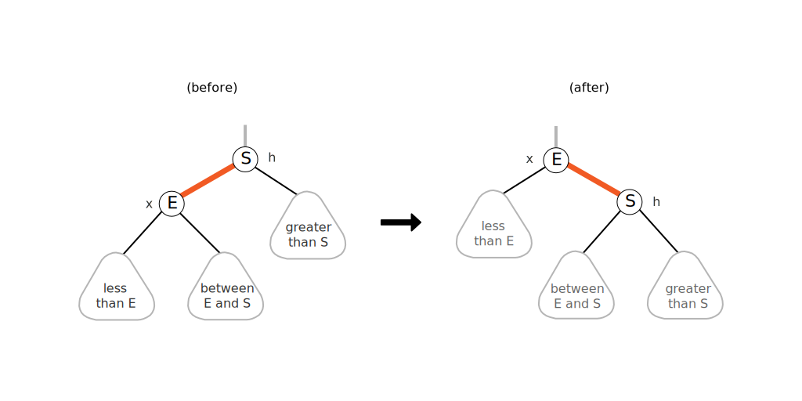

Lecture 6 - Notes
January 21, 2016
Balance Search Trees - Contined
Red-Black Trees
A better way to represent a represent a 2-3 tree using a binary tree with one edge used as the "glue" edge to create a 3-node. We apply the arbitrary restriction the the red link are on the left.
definition: A Red-Black Tree is a binary search tree where,
- No node has two red links connected to it
- Every path from root to null link has the same number of black links (perfect black balance)
- Red links lean left
this tree also has a one-to-one correspondence with a 2-3 tree. To map the correspondence the red links are used to "join" 3-nodes.
Search
Search is the same as a normal binary search tree but faster because of better balance.
Left Rotation
To bring a (temporarily) right leaning edge to the left, we need to do a left rotation,

private Node rotateLeft(Node h)
{
assert isRed(h.right);
Node x = h.right;
h.right = x.left;
x.left = h;
x.color = h.color;
h.color = RED;
return x;
}
Right Rotation
To bring a left leaning edge to the right (temporarily), we do a right rotation,

private Node rotateRight(Node h)
{
assert isRed(h.left);
Node x = h.left;
h.left = x.right;
x.right = h;
x.color = h.color;
h.color = RED;
return x;
}
Color Flip
To recolour to split a (temporary) 4-node,
private void flipColors(Node h)
{
assert !isRed(h);
assert isRed(h.left);
assert isRed(h.right);
h.color = RED;
h.left.color = BLACK;
h.right.color = BLACK;
}
Insertion
Insert a node we navigate the Binary Search Tree and perform the insertion using a red edge (so we maintain perfect black balance). Then we move back up the tree fixing any issues we create.
- Right child red, left child black: rotate left.
- Left child, left-left grandchild red: rotate right.
- Both children red: flip colors.
private Node put(Node h, Key key, Value val)
{
if (h == null) return new Node(key, val, RED);
int cmp = key.compareTo(h.key);
if (cmp < 0) h.left = put(h.left, key, val);
else if (cmp > 0) h.right = put(h.right, key, val);
else if (cmp == 0) h.val = val;
if (isRed(h.right) && !isRed(h.left)) h = rotateLeft(h);
if (isRed(h.left) && isRed(h.left.left)) h = rotateRight(h);
if (isRed(h.left) && isRed(h.right)) flipColors(h);
return h;
}
Balance
Property: The height of the tree is $\le 2 \lg N$ in the worst case.